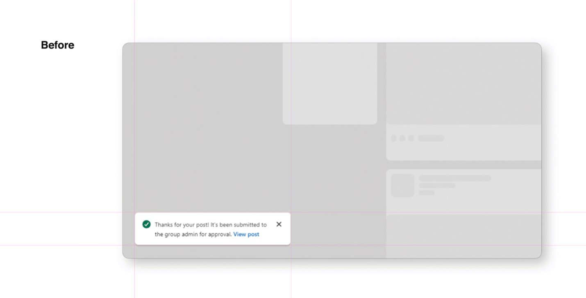
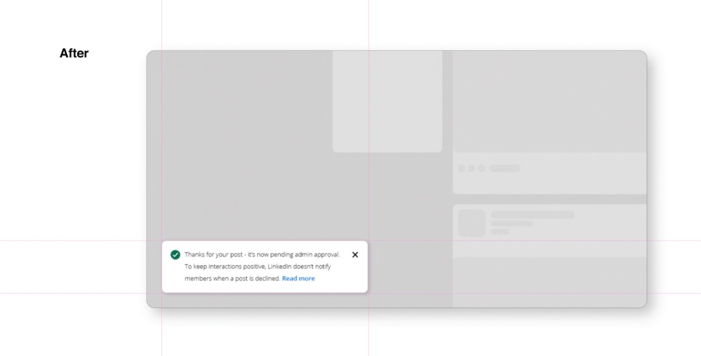
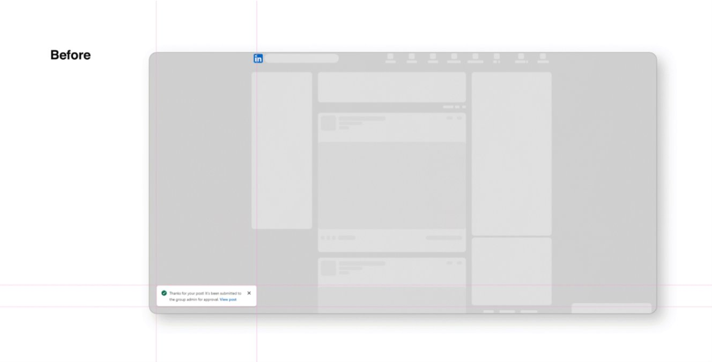
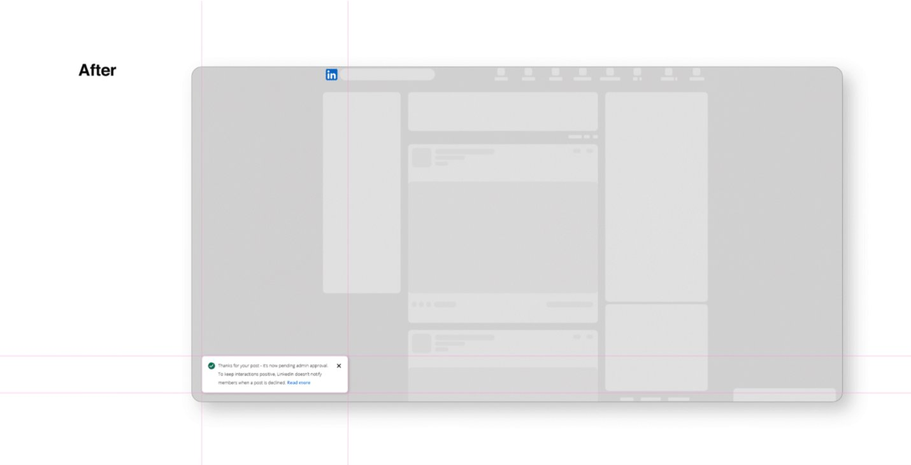

I posted an article into a LinkedIn group dedicated to mobile app design, hoping to spark discussion and share some insights with fellow designers.
I clicked "Post" and saw the message:
Thanks for your post! It's been submitted to the group admin for approval. View post
Simple. Clear. Encouraging.
I expected the post to either show up soon… or receive some type of update.
Then I waited.
The Silence
Hours passed. No notification. No post in the group feed. No status indicator in my activity.
I refreshed the group. I checked my notifications again. I searched my own profile. Still nothing.
Is my post still pending review?
- Was it rejected?
- Did I violate a rule?
- Should I repost it?
- Did it glitch?
This uncertainty wasn't just confusing. It was psychologically uncomfortable.
Behind the Curtain
What actually happened? A moderator reviewed the post and declined it. But LinkedIn's system does not send a rejection message for group posts.
So my post simply remained invisible.
This isn't unusual for LinkedIn — in fact, even declined connection requests work the same way. When someone declines your invite:
- You get no notification
- The only clue is that the "Connect" button reappears on their profile
The platform intentionally avoids creating awkward moments between professionals.
UX Breakdown — Heuristics & Psychology Violated
While the intention may be good, the silence breaks several UX principles:
Psychological Effects
Second-Order Effects — The Hidden Consequences
The design choice seems small, but its ripple effects are big:
Downstream impact
- Users post less because they fear being ignored.
- Moderators get more repetitive or off-topic posts due to lack of feedback.
- New members feel unwelcome due to lack of response.
A positive, privacy-protective model ends up creating unintentional friction.
The Solution — A Better, More Transparent UX
Instead of sending explicit rejection messages, a gentle, expectation-setting approach could fix the confusion while maintaining professionalism.



Current state — the "submitted to admin" message gives no signal about what happens if declined

Proposed state — one additional line sets expectations: "LinkedIn doesn't notify members when a post is declined." No awkwardness. No confusion.
Why this works
The notification no longer leaves the user guessing. By proactively explaining the platform's decline policy within the same confirmation message, LinkedIn can protect professional relationships while eliminating ambiguity anxiety entirely.
One sentence. Zero awkwardness. Complete transparency.